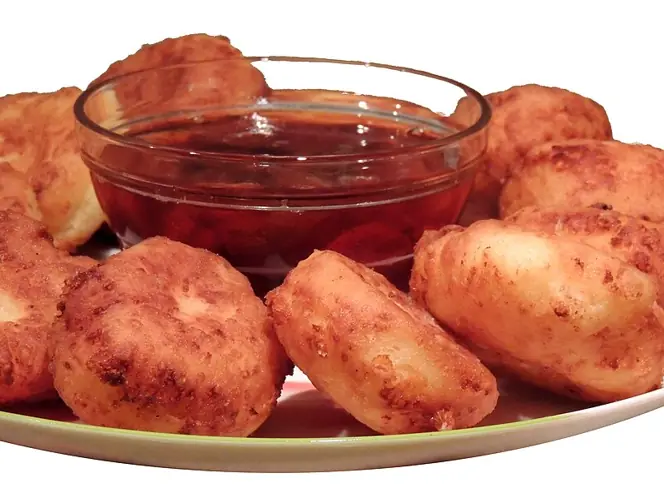

Фото: Tatyana Morozyuk, color processing by Off-shell, CC BY-SA 3.0

Сырники
Классические сырники из творога с румяной корочкой
30 мин3 порц.398 ккал на порциюБ 28 · Ж 19 · У 29Русская кухня
Продукты на 3 порц.
- Творог 5%400 г
- Яйцо куриное1 шт
- Мука пшеничная3 ст. л.
- Сахар1,5 ст. л.
- Ванильный сахар по желанию1 ч. л.
- Соль1 щеп.
- Растительное масло3 ст. л.
- Сметана 20% по желаниюпо вкусу
Как готовить
- Если творог влажный, отожмите его через марлю. Разомните вилкой до однородности без крупных комков.
- Добавьте яйцо, сахар, ванильный сахар и соль, перемешайте.
- Всыпьте 2 ст. л. муки и замесите мягкую массу, которая держит форму.
- Мокрыми руками сформируйте 9-10 шайб толщиной 1,5 см и обваляйте их в оставшейся муке.
- Разогрейте масло на среднем огне. Жарьте сырники по 3-4 минуты с каждой стороны до золотистой корочки.
- Накройте крышкой, убавьте огонь до слабого и подержите ещё 2-3 минуты, чтобы они прогрелись внутри.
- Подавайте со сметаной, вареньем или мёдом.
Совет. Главная ошибка - слишком много муки: сырники выходят резиновыми. Если масса растекается, отожмите творог, а не добавляйте муку.